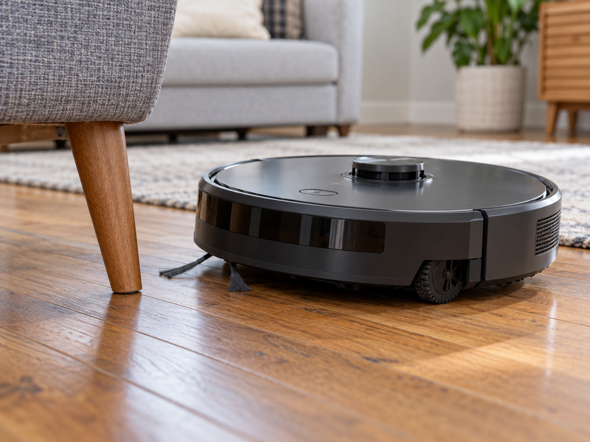
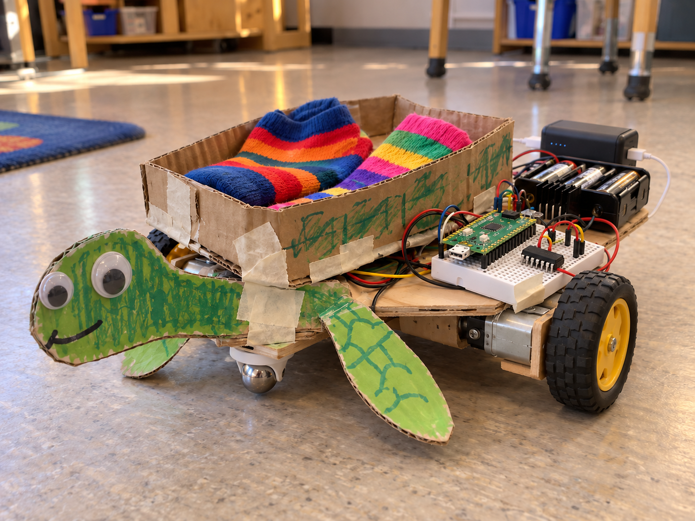

Robot vacuum cleaner
DetectSense a nearby obstacle
DecideIs the path clear?
DoDrive on or turn away
A two-wheel rover uses a separate geared motor for each wheel. A caster or smooth skid supports the other end.
Drive both wheels forwards to move; change their speeds or directions to turn. A motor driver handles their power.
The Robot class joins the two motors into one object. This example uses a breadboard-mounted L293D chip and a separate motor battery pack.


from gpiozero import Motor, Robot
from time import sleep
robot = Robot(left=Motor(13, 19),
right=Motor(17, 27))
try:
robot.forward()
sleep(1)
finally:
robot.stop()from picozero import Robot
robot = Robot(left=(14, 15),
right=(22, 21))
robot.forward(t=1, wait=True)